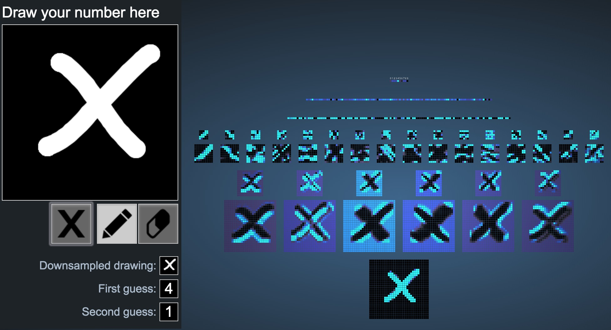

Problem 1:
Visualizing convolutional neural networks
I went through the X Y and Z out of curiosity, and got pretty much what I expected, with the exception of X, which I honestly didn't know what to expect. For Y I honestly can't say what similarities it shares with 8, except maybe the "pinching" off into different strands at the center. For Z I expected 2.


The system is surprisingly robust when it comes to random noise, likes these dots. It makes me wonder if it was trained on such examples or it it's just that good at deducing features.

Problem 2: Style transfer examples
I needed a new Instagram profile picture
Here I take the style of Kanagawa's Wave off Mount Fuji
Here I take Basquiat's Untitled, 1981 's style
Problem 3:
Fast style transfer
Original image

Passing the image through the same filter multiple resulted in a notable loss of detail in the image, as well as a notable increase in padding artifacts which took the form of a border (which I now realize I failed to capture in this screenshot). The image also seemed to become more pixelated every time.

Interestingly, the image becomes notably pixelated through the pass of two different filters, and it seems that the styles don't mix very well either, as seen by the blurriness of the image.

Problem 4: Building CNNs with code
Convolution-RELU-Pool CIFAR-10 Layers: 1
Try changing the learning rate, batch size, and number of batches. Make sure that these numbers are reasonable to start (i.e. won't take too long to run on your computer).
Here I test batch sizes of 50, with the number of batches being 500 and 1000, respectively, with the larger number of batches obvious yielding a better result due to more training.
Try changing some of the other parameters like field size, stride, output, …
Initially I began by changing the stride size, which didn't seem to change much. Where I saw notable change, however, was in changing the optimizer. On average it seemed to reach much higher accuries, for example this was done using adamax:
Additionally, I excitingly managed to get the highest accuracy by far of the three examples I use, by changing the number of filters to a higher number! In this case 6:

Convolution-RELU-Pool CIFAR-10 Layers: 2
Try changing the learning rate, batch size, and number of batches. Make sure that these numbers are reasonable to start (i.e. won't take too long to run on your computer).
Try changing some of the other parameters like field size, stride, output, …
I attempted that same changes I made with the 1 layer conv network above, and same parameters, only to yield poorer results.
Convolution-RELU-Pool CIFAR-10 Layers: 3
Try changing the learning rate, batch size, and number of batches. Make sure that these numbers are reasonable to start (i.e. won't take too long to run on your computer).
I first started with a batch size of 50 and 500 batches:
Overall a larger number of batches did better as expected (1000 = NUM_BATCHES):
Try changing some of the other parameters like field size, stride, output, …
Again, similar changes to the ones above yield even poorer results on the 3 layer conv network.
Do you have a hypothesis for why CIFAR-10 is so much harder to train on than Fashion MNIST and MNIST (i.e. it’s more difficult to achieve a 90%+ accuracy) while Fashion MNIST has similar training times to MNIST (even though Fashion MNIST is more complex than MNIST)?
My initial guess would be that the images in CIFAR-10 are far more complex feature-wise than the MNIST datasets. There's also the addition of color that we have to account for.that adds another few layers of complexity where images might overlap.
How does adding more convolutional layers relate to accuracy and training speed? Is there a point at which adding more layers plateaus or even decreases the maximum accuracy you are able to achieve with that model?
The training speed decreases due to the increased number of computations the computer has to make. And one might think that an increase of convolutional layers allows for more finely distinguishing features in the image and thus more accuracy, but as we saw: that didn't really happen. I might attribute this to the fact that maybe those nets require much longer training because there are so many more parameters that they have to converge on.
Problem 5:
Add code that captures some performance statistic from a testing run. For example, you might keep track of the fraction of examples where the prediction was correct , or perhaps do something more detailed that takes the predicted probabilities into account.
I tried to add a new statistic that averaged the accuracies over the entire training set, but again I couldn't figure out how to make javascript display that alert